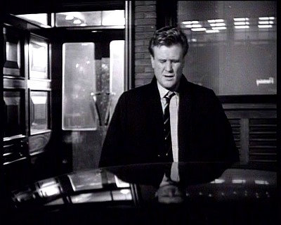
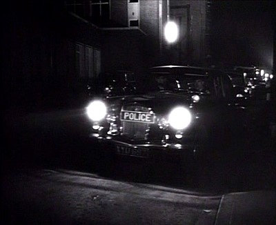
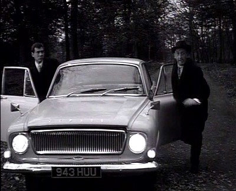
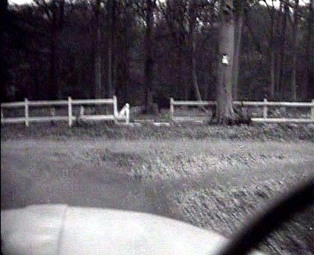
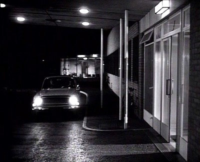
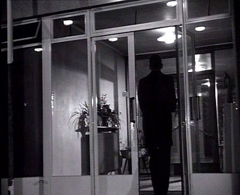

|
|
HELP FIND THE FOLLOWING LOCATIONS
PAGE 6
GIDEON’S WAY: The Alibi Man (Cyril Frankel: February 1965)
Park Road, London NW1 – Late
at night Bruce Carroway races back to his garage through the
London streets (junction of Park Road and Gloucester Place) after his partner starts to examine the company records.
(Identified by Sietse Postma, February 2025)


GIDEON’S WAY: Fall High, Fall Hard (Leslie Norman, November
1964)
Upper Thames Street, junction with Broken Wharf, London EC4 – Tony Erickson (Donald Houston)
decides to get very drunk ant then decides to drive home in his jaguar.



Film:
THE PAINTED SMILE (1962)
Unknown 2 – The police are soon on his trail.


Unknown 3 –

Unknown 4 –

Uxbridge Road, Hayes, Middlesex – A second police car is sent to lay in wait for the car.


Unknown 6 – Jenson and Thompson kidnap Erickson and then stage a car crash with and unconscious Erickson at the wheel.



Unknown 7 –Jenson (Mike Pratt) drives Thompson (Gordon Costelow) to Banford Hospital in his Zephyr. He is there to dispose of Tony Erickson once and for all.


 A studio
Administration Building, ABPC/Cannon Studios?
– the following
interior shots is the ABPC reception area.
A studio
Administration Building, ABPC/Cannon Studios?
– the following
interior shots is the ABPC reception area.
Think you know a spot? Need a bigger image? Email me.
< Previous | Index | Avengerland | Next >
Copyright © 2021 Anthony R. McKay